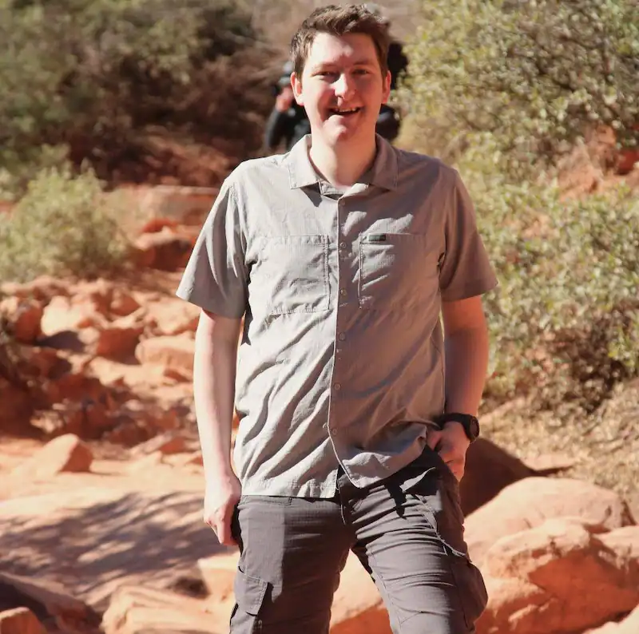

Cayden Lunt | WDD 130
Hey! My name is Cayden. For work I am a Product Test Engineer and Developer. I enjoy photography and seeing how far I can take dirt roads before they end in my Jeep. I enjoy writing code in C# and have been working on a program which automatically documents C# code into a markdown file when you commit your changes to a git repository. I do a lot of work with weather stations and renewable energy for work. I particularly enjoy working with any sort of solar sensor. I have built a solar tracker which can fit a full size solar panel from scratch. This has allowed me to greatly improve my testing capabilities at work by being able to directly point sensors at the sun which allows me to test for longer periods each day.